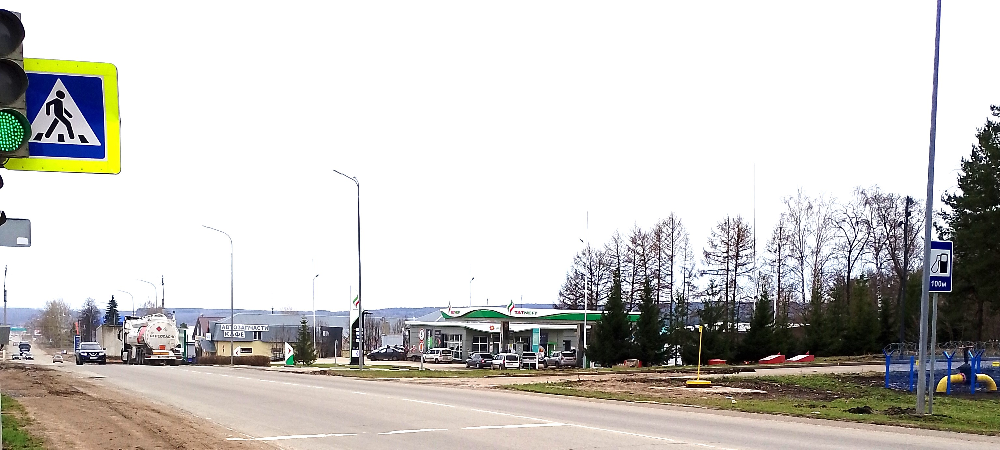
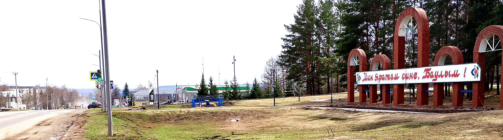

Схема проезда
Как добраться
- Ориентир: Рядом с кафе "Чайхана" и АЗС "Татнефть".


♿ Доступность: Есть пандус для маломобильных групп населения.


♿ Доступность: Есть пандус для маломобильных групп населения.